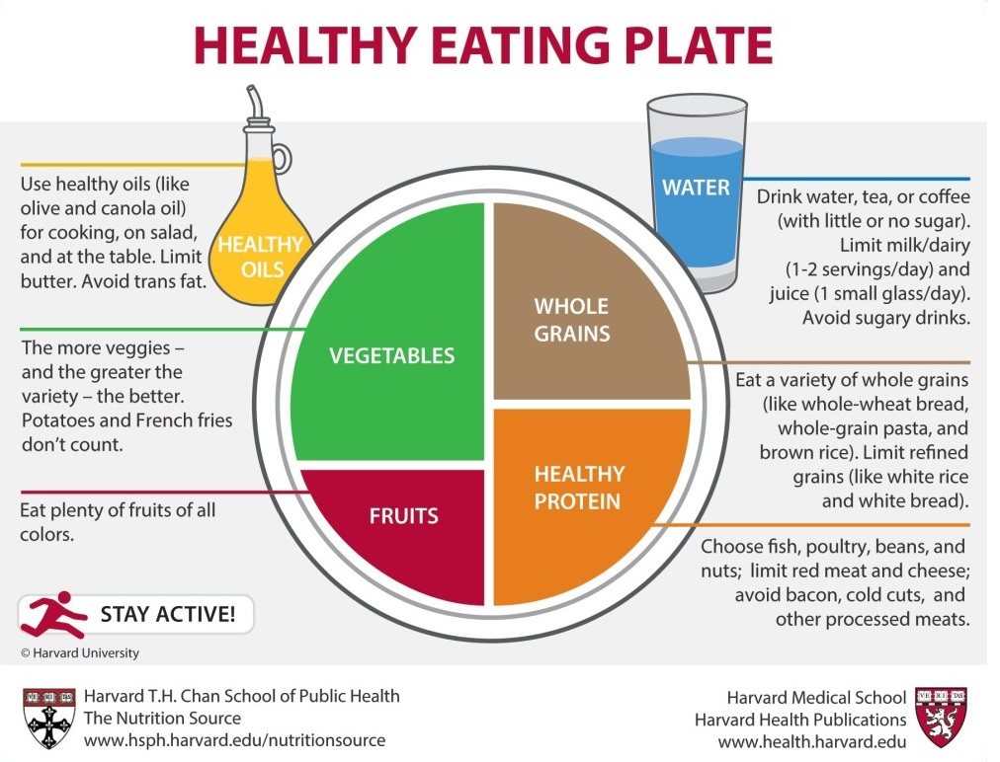

The Best Diet: Quality Counts
Dietary guidelines have changed over the years as research becomes more accurate in determining what we should eat to attain optimal health and weight. The strongest evidence to date shows that calories matter, but focusing on food quality is an equally important part of preventing weight gain and promoting weight loss.
Consider quality, not just calories
“A calorie is a calorie” is an oft-repeated dietary slogan, and not overeating is indeed an important health measure. Rather than focusing on calories alone, however, emerging research shows that quality is also key in determining what we should eat and what we should avoid in order to achieve and maintain a healthy weight. Rather than choosing foods based only on caloric value, think instead about choosing high-quality, healthy foods, and minimizing low-quality foods.
- High-quality foods include unrefined, minimally processed foods such as vegetables and fruits, whole grains, healthy fats and healthy sources of protein – the foods recommended in the Healthy Eating Plate.
- Lower-quality foods include highly processed snack foods, sugar-sweetened beverages, refined (white) grains, refined sugar, fried foods, foods high in saturated and trans fats, and high-glycemic foods such as potatoes.
Quality counts
One study analyzed whether certain foods were more or less likely to promote weight gain. This type of research examining specific foods and drinks allows us to understand whether “a calorie is a calorie,” or if eating more higher-quality foods and fewer lower-quality foods can lead to weight loss and maintenance. Researchers in the Department of Nutrition at Harvard School of Public Health show us that quality is in fact very important in determining what we should eat to achieve and maintain a healthy weight, and that the notion of “a calorie is a calorie” does not tell the whole story.
- In a study of over 120,000 healthy women and men spanning 20 years, researchers determined that weight change was most strongly associated with the intake of potato chips, potatoes, sugar-sweetened beverages, and both processed and unprocessed red meats. The researchers concluded that consumption of processed foods higher in starches, refined grains, fats, and sugars can increase weight gain.
- Foods shown to be associated with weight loss were vegetables, whole grains, fruits, nuts, and yogurt.
- Researchers did not discount the importance of calories, instead suggesting that choosing high-quality foods (and decreasing consumption of lower-quality foods) is an important factor in helping individuals consume fewer calories.

With all this reading done, know how much calories you should take per day!
Male Female